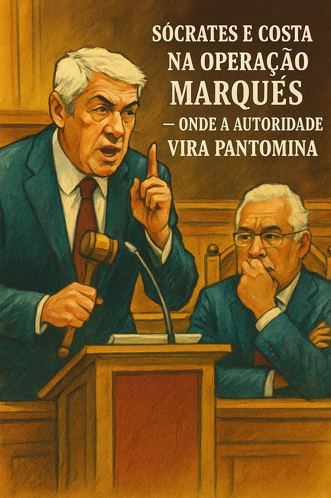

Publicado em 2025-05-15 15:15:23
O cidadão comum já não sabe se deve rir, chorar ou emigrar. A Operação Marquês, que começou como promessa de justiça exemplar, transformou-se numa novela judicial grotesca, uma espécie de reality show jurídico que arrasta o país na lama da descrença.
José Sócrates, ex-primeiro-ministro de Portugal, continua a manipular o sistema com a destreza de quem o conhece por dentro. Recursos atrás de recursos, contestações recicladas, argumentação vazia que já foi recusada dezenas de vezes — e agora, cereja em cima do entulho, chama António Costa como testemunha. Uma jogada política disfarçada de estratégia processual, como quem diz: "Não caio sozinho."
O que choca não é a defesa desesperada — é a passividade do sistema. A justiça portuguesa, feita de formalismos barrocos e prazos elásticos, permite este arrastar eterno. O cidadão comum olha e pensa: se fosse comigo, já estaria preso ou arruinado. Mas para a elite política e económica, a justiça é um campo de manobra, uma ferramenta de desgaste controlado.
Não se faz justiça quando se perde a noção do tempo. Não há democracia sólida quando um processo se estende por mais de uma década. E não há país digno quando figuras públicas que lideraram governos são tratadas com mais brandura do que um cidadão que não pagou o IVA a tempo.
Portugal tornou-se especialista na arte do adiamento. A justiça deixou de ser um instrumento de verdade para se tornar um prolongamento do teatro político. O processo Sócrates já não é um julgamento — é um monumento à impotência de um Estado capturado, cúmplice e cobarde.
Que ninguém se engane: não é Sócrates que está em julgamento. É o próprio sistema judicial português. E até agora, está a perder. Estrepitosamente.
In Crónicas de cidadania